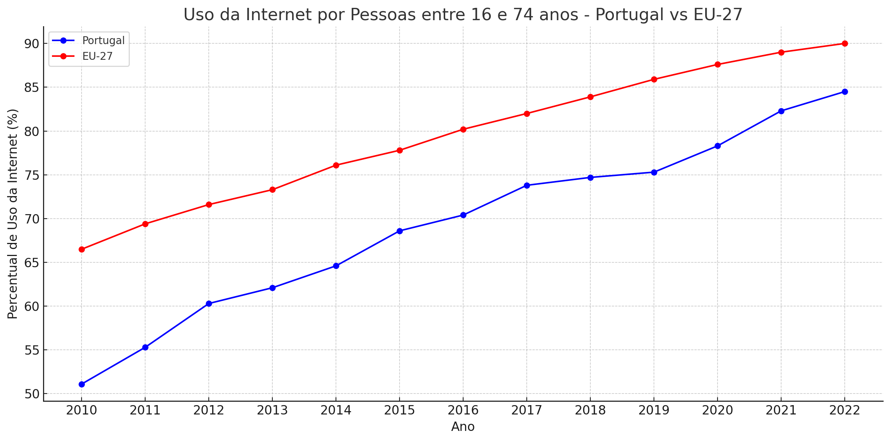
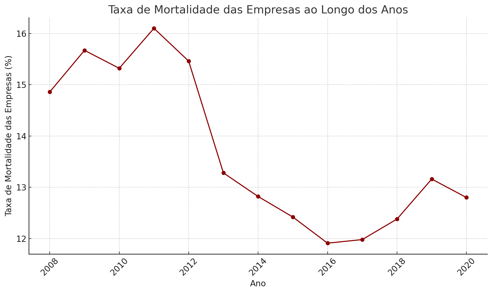
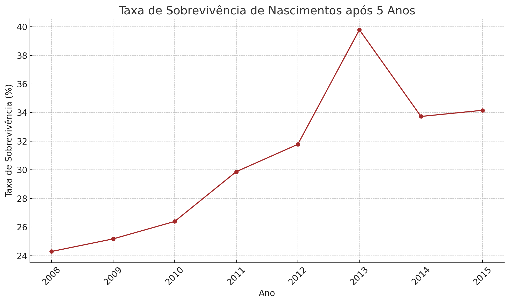
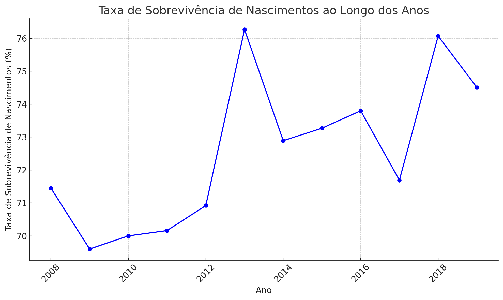

Gráficos Estatisticos
   Estes gráficos mostram a evolução da iliteracia tecnológica em Portugal ao longo dos anos e dados que comprovam que a iliteracia tecnológica é um problema que afeta muitas pessoas em Portugal.

Estes gráficos mostram a evolução da iliteracia tecnológica em Portugal ao longo dos anos e dados que comprovam que a iliteracia tecnológica é um problema que afeta muitas pessoas em Portugal.